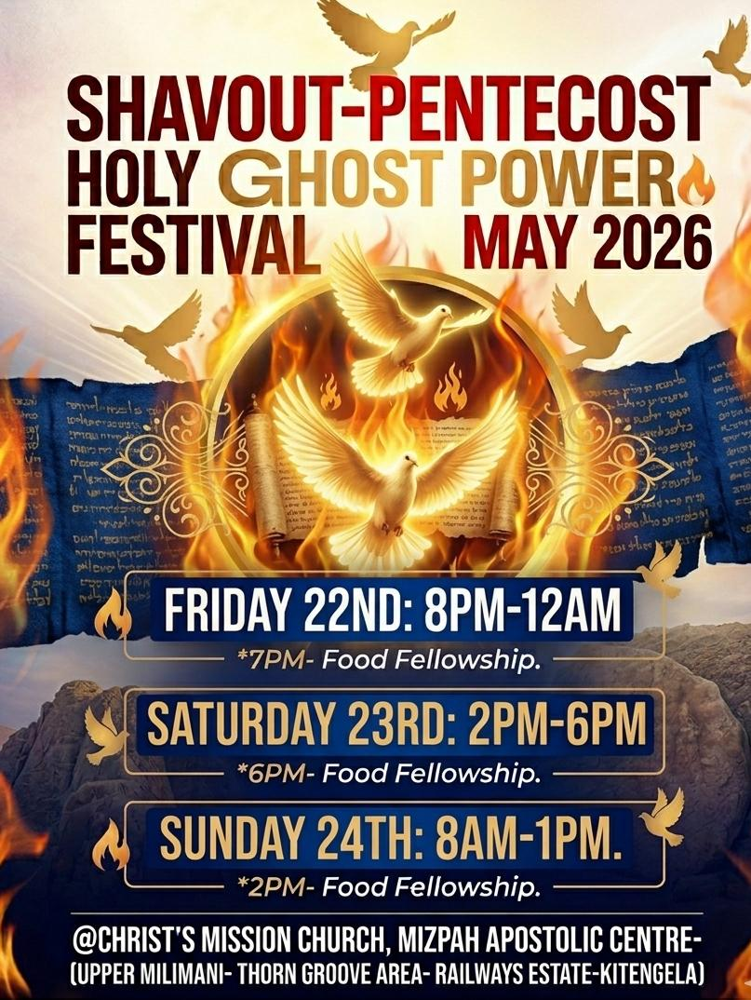

Today at CMC
Checking today's events...
Join us for worship, prayer, fellowship, outreach, and gatherings that strengthen our church family.
Checking today's events...
Checking the next event...
Saturday, June 13, 2026 | Gates open 1:00 PM
Cynthia Wambui presents Grace Upon Grace SN2: Kigooco Edition, featuring Bishop Dr. Yakohv and guest ministers.
Venue: Life Church Limuru, Destiny Grounds.
Buy Tickets Online Dial *672*66# for ticketsPrayer, praise and worship, Bible teaching, testimonies, presentations, announcements, and the sermon.
Church workers prayer hour from 6:00 - 7:00 PM, followed by Bible Study for all from 7:30 - 8:30 PM.
Men's and heads of families prayer hour from 6:00 - 7:00 PM, followed by Bible Study for all from 7:30 - 8:30 PM.
Women meet from 5:00 - 8:00 PM for prayer and their own Bible Study, early enough to return home and tend to their families.
Youths and singles prayer hour from 6:00 - 7:00 PM, followed by Bible Study for all from 7:30 - 8:30 PM.
Prayer hour for all from 6:00 - 8:30 PM, followed by Bible Study from 8:30 - 9:30 PM.
Prayer from 5:00 - 7:00 PM.
Dates are listed for the Diaspora and begin at sunset. These are shown with New Testament names and references where the feast is directly named or clearly echoed.

April 1 sunset - April 9 nightfall, 2026
15-22 Nisan 5786. New Testament: Passover and Unleavened Bread.
Luke 22:1; 1 Corinthians 5:7-8
April 2 sunset - April 3 sunset, 2026
16 Nisan 5786. New Testament: Christ the firstfruits.
1 Corinthians 15:20
May 21 sunset - May 23 nightfall, 2026
6-7 Sivan 5786. New Testament: Day of Pentecost.
Acts 2:1
September 11 sunset - September 13 nightfall, 2026
1-2 Tishrei 5787. New Testament: trumpet imagery and resurrection hope.
1 Corinthians 15:52; 1 Thessalonians 4:16
September 20 sunset - September 21 nightfall, 2026
10 Tishrei 5787. New Testament: the Fast.
Acts 27:9
September 25 sunset - October 2 nightfall, 2026
15-21 Tishrei 5787. New Testament: Feast of Tabernacles.
John 7:2
October 2 sunset - October 4 nightfall, 2026
22-23 Tishrei 5787. New Testament: the last great day of the feast.
John 7:37
December 4 sunset - December 12 nightfall, 2026
25 Kislev - 2 Tevet 5787. New Testament: Feast of Dedication.
John 10:22Calendar dates verified with Hebcal's 2026 Diaspora holiday calendar.
Our Sunday service runs from 8:30 AM to 1:00 PM with time for prayer, worship, teaching, fellowship, and the Word.
There is a place for you and your family at Christ's Mission Church.
Plan a Visit